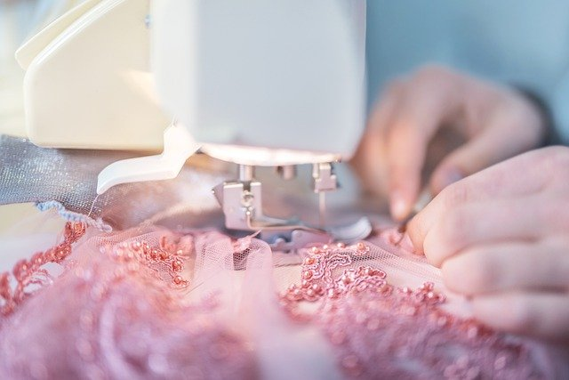
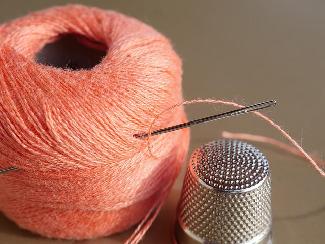
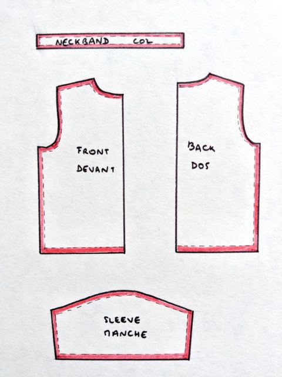

Si tu es ici c'est évidemment pour apprendre à coudre, je te donnerai toutes les astuces pour que tu deviennes un vrai couturier.
Commençons !
Les outils dont tu auras besoin
Afin de coudre il est nécessaire d'avoir du matériel, tu ne pourras pas coudre seulement avec tes doigts...
Tu pourras coudre manuellement à l'aiguille, pour cela il te faudra un dé à coudre. Attention à ne pas se piquer ! Des épingles afin de tenir ton tissu et du fil seront également nécessaire.
Tu peux aussi utiliser une machine afin de coudre plus vite ! Cependant certaines personnes préfèrent la bonne vieille méthode.
Les voicis :
Je t'invite à cliquer ci-dessous si tu veux te procurer ces objets pour pas cher.
Nécessaire de couture
Les étapes
Enfiler l'aiguille (et faire des points droits)

Il est préférable d'avoir un fil assez long. Coupe deux fois plus de fil que nécessaire. Prends une extrémité du fil entre le pouce et l’index, fais-le passer dans le chas de l’aiguille. Ramène ensuite l’aiguille à mi-chemin en tenant les deux extrémités du fil ensemble. À ce moment-là, fixe les extrémités en faisant un nœud.
C'est ici que ça commence :
- Passe l'aiguille à l'envers du tissu (ainsi le trou ne se verra pas).
- Tire l'aiguille puis pique là à l'endroit du tissu.
- Il est important que les endroits où tu piques soient proches et de tirer sur le fil à chaque fois.
- Répete les étapes au-dessus jusqu'à ce que tu sois satisfait.
- Tu as terminé ! L’aiguille et le fil doivent maintenant être sur l’envers, où tu peux terminer avec un autre nœud. Fais-le aussi près du tissu que possible, sinon tes points vont se déplacer et s’étirer.
Avec une machine.
- Enfile le fil dans la machine, il y a souvent des flèches représentées pour te guider.
- Place ton tissu sous le pied de biche et baisse celui-ci.
- Appuie sur la pédale et tiens bien ton tissu étiré.
- Et hop ! Le tour est joué.
Couds deux morceaux de tissus ensemble

Assemble tes tissus ensemble côté envers vers l’extérieur (et les 2 côtés face ensemble). Aligne les bords sur la longueur sur laquelle tu souhaites les joindre. Couds en une ligne qui suit les bords.
Une fois que c’est fait, écarte les morceaux. Ils seront maintenus ensemble sur la couture que tu viens de réaliser, mais le fil sera à peine visible.
Les patrons

Si tu veux créer des vêtements, ou sacs spéciaux il te faudra un modèle, en couture ça s'appelle un patron.
Tu pourras trouver ces patrons :
- En ligne gratuitement.
- Sur le compte de certains créateurs.
- Sur des sites en vente.
Pourquoi avoir un patron ?
- Tu pourras décider de la taille et ta création t'iras comme un gant.
- Tu pourras créer des modèles spéciaux et chic
- Enfin, c'est ton guide il est là pour t'aider.
Conseils
Maintenant que tu sais coudre, voilà quelques conseils pour que tu sois un vrai professionnel et qu'on confonde tes créations avec celles de maisons de luxe.
- Prends du fil ayant une couleur proche de celle du tissu, mais pas identique, ainsi, tu verras mieux ce que tu fais et il te sera plus facile de corriger tes erreurs.
- Humidifie le bout du fil avec la bouche pour faciliter le passage dans le chas de l’aiguille.
- Pour coudre des points complexes, utilise une machine à coudre. Ainsi, tu réaliseras de jolis points décoratifs plus facilement.